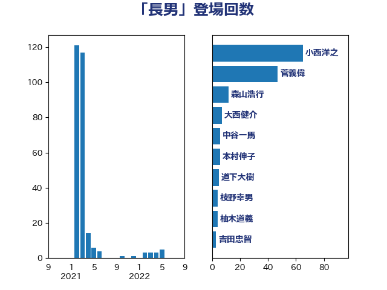

単語「長男」

| 小西洋之 | 立憲民主党 | 65 回 |
| 菅義偉 | 自由民主党 | 47 回 |
| 森山浩行 | 立憲民主党 | 12 回 |
| 大西健介 | 立憲民主党 | 7 回 |
| 中谷一馬 | 立憲民主党 | 6 回 |
| 本村伸子 | 日本共産党 | 6 回 |
| 道下大樹 | 立憲民主党 | 5 回 |
| 枝野幸男 | 立憲民主党 | 4 回 |
| 柚木道義 | 立憲民主党 | 4 回 |
| 吉田忠智 | 立憲民主党 | 3 回 |
| 堤かなめ | 立憲民主党 | 3 回 |
| 塩川鉄也 | 日本共産党 | 3 回 |
| 大串博志 | 立憲民主党 | 3 回 |
| 宮本徹 | 日本共産党 | 3 回 |
| 後藤祐一 | 立憲民主党 | 3 回 |
| 櫻井周 | 立憲民主党 | 3 回 |
| 神谷裕 | 立憲民主党 | 3 回 |
| 足立康史 | 日本維新の会 | 3 回 |
| 近藤和也 | 立憲民主党 | 3 回 |
| 伊藤岳 | 日本共産党 | 2 回 |
| 嘉田由紀子 | 無所属 | 2 回 |
| 山添拓 | 日本共産党 | 2 回 |
| 杉尾秀哉 | 立憲民主党 | 2 回 |
| 芳賀道也 | 国民民主党 | 2 回 |
| 三木圭恵 | 日本維新の会 | 1 回 |
| 上田英俊 | 自由民主党 | 1 回 |
| 下野六太 | 公明党 | 1 回 |
| 中山展宏 | 自由民主党 | 1 回 |
| 仁木博文 | 無所属 | 1 回 |
| 加藤勝信 | 自由民主党 | 1 回 |
| 吉田統彦 | 立憲民主党 | 1 回 |
| 堀場幸子 | 日本維新の会 | 1 回 |
| 小渕優子 | 自由民主党 | 1 回 |
| 尾辻秀久 | 無所属 | 1 回 |
| 梅村みずほ | 日本維新の会 | 1 回 |
| 森本真治 | 立憲民主党 | 1 回 |
| 清水貴之 | 日本維新の会 | 1 回 |
| 秋野公造 | 公明党 | 1 回 |
| 美延映夫 | 日本維新の会 | 1 回 |
| 舟山康江 | 国民民主党 | 1 回 |
| 蓮舫 | 立憲民主党 | 1 回 |
| 藤原崇 | 自由民主党 | 1 回 |
| 逢坂誠二 | 立憲民主党 | 1 回 |
| 金城泰邦 | 公明党 | 1 回 |
| 金村龍那 | 日本維新の会 | 1 回 |
| 高橋千鶴子 | 日本共産党 | 1 回 |